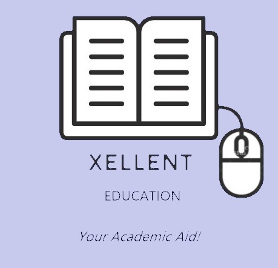

|  |
|---|
Here at XELLENT EDUCATION we strive to provide our students with the best academic aid that they can ever recieve from a tutorial institution. |
| With Tutorials Curated by the best teachers there out in the field, imparting knowledge to thousands of students every year. |
| A. Learning strategy and transformation:- D role and competence, technology and infrastructure and learning culture 2.Course to role approach: Developing a tailor-made learning curriculum to meet the specific requirements 1.Learning strategy: Defining the right learning strategy, operating model, governance, return/value on investment and sustainability. 2.Digital learning strategy: Conducting digital learning design, development, delivery and evaluation. 3.Learning transformation: Transforming client learning functions to support the organisations strategic plan, learning and digital strategy. B. Managed learning services: learning design and development 1.Learning needs analysis: Identifying the most effective way to design and deliver learning programmes to the learner for particular requirements 2.E-learning: Designing and developing modules for individual or curriculum-based learning initiatives including mobile-ready or gamified design 3.Classroom: Creating immersive and prac-academic classroom learning using multiple pedagogical approaches C. Building learning academies: 1.Foundation model: Defining, scoping and building transformational academies for our clients based on eight levers business strategy alignment, learning metrics and impact, integrating learning with other HR processes, learner experience, L&D operating model, L&of a learners role 3.Learning journey: Creating an immersive learning journey for individuals / business functions through a practitioners perspective with focus on competency mapping, succession planning and capability development |
| Innovative technology: Powered by a state of the art technology platform, our Learning Management System provides a seamless learning experience combining instructor-led, self-paced, virtual classroom and mobile learning options. Learners are able to create personalised progress journeys by measuring outcomes and are encouraged to learn through peer c ommunities to promote collaborative learning. Showcase of knowledge: We deliver 90+ learning programmes across: a.Finance b.Leadership, management and people c.Forensic, risk, governance and compliance d.Performance, process, service and quality e.Digital and technology. f.Learning design that delivers: The Academy brings real world experience and knowledge to contextualise learning designs so that their impact is measurable and relevant to organisations. We believe in defining clear objectives, curating content to pique emotional connect and engaging with alternate formats such as gamification and storytelling to deliver exceptional learning programmes. Global network: Our Academy operates across the world to develop compelling solutions that our clients need. We also work to create internationally recognised programmes that add unequaled value to organisations. |